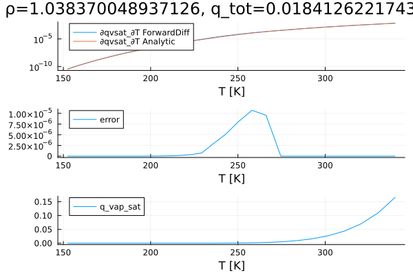

Clausius Clapeyron relation
This script plots the Clausius Clapeyron relation for a range of temperatures. The analytically derived expression is compared with a solution computed using ForwardDiff.jl.
This script is decoupled from the implementation in the test suite, and should be unified to ensure that tests and plots stay.
include("Clausius_Clapeyron.jl")"/home/runner/work/Thermodynamics.jl/Thermodynamics.jl/docs/build/Clausius_Clapeyron.svg"